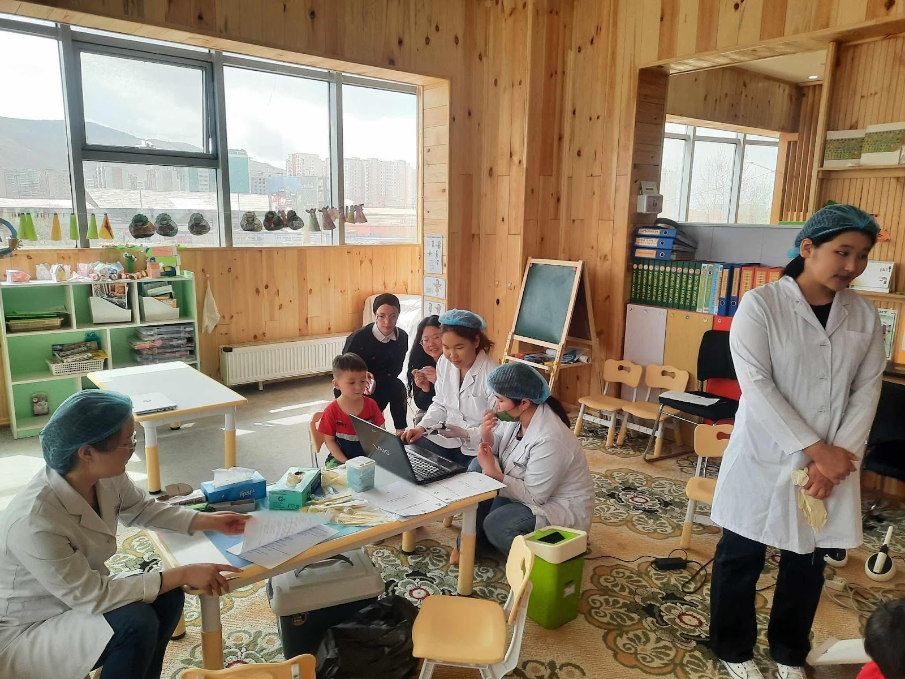
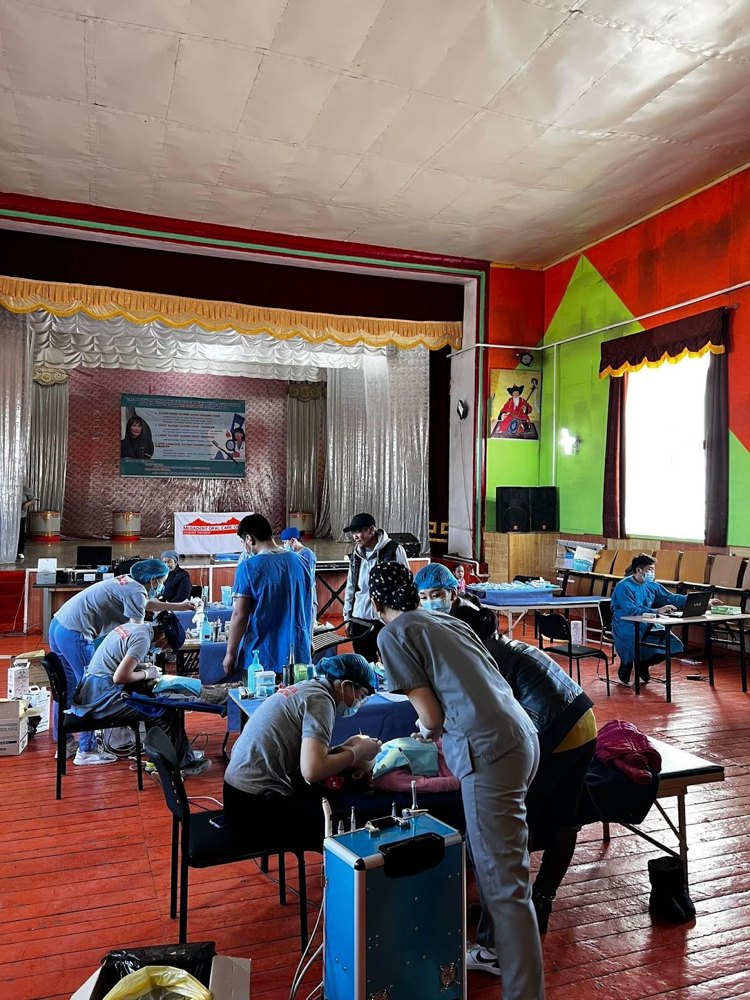

Medical examinations were conducted based on the capacity of the kindergarten and the available time. Examination rooms were typically set up in advance, either in designated doctor’s offices or institutional halls. The process involved close collaboration with the group of teacher and assistant teachers. To begin, the children received oral hygiene lessons to help them understand the importance of dental care, and special attention was given to creating a positive, team-oriented environment for the children. Following this, the teachers and the children demonstrated the proper use of toothpaste and toothbrushes. Finally, the children were provided professional advice on brushing techniques, focusing on brushing their teeth both in the morning and after meals (guided by the Oral Hygiene Team). Four doctors conducted oral examinations on the children, carefully documenting their findings on individual medical records. At the same time, another team of four doctors used an intraoral camera to capture detailed images of the children's teeth, ensuring a comprehensive record of each child's dental health.  During the rural inspection, the collection team collaborated with the Megadent Hospital as a medical supporter. In examining the residents of remote regions, they provided crucial assistance in oral treatment, oral surgery, and pediatric dental care while also addressing urgent cases and taking necessary emergency measures. The examinations focused primarily on identifying hard dental tissue diseases in children through oral assessments. To minimize the children's fear of doctors visiting their kindergarten, the medical team avoided wearing traditional doctor’s attire as much as possible. The World Health Organization's dental disease classification system was used to document diagnoses in the medical records, and any changes in symptoms were also carefully noted. For instance, black caries were classified as either hard or soft based on their characteristics.  The oral mucosa, labial frenulum, and tongue frenulum were also examined and recorded. Using the SNAP camera (Figure 4) produced by the Korean Osstem company, oral images were captured, and a data archive was created with each child assigned a unique numeric code in the software (e.g., K164P002, where K stands for the kindergarten name and P represents the child's number). Before taking the photos, the oral cavity was dried with a sterile bandage. Disposable gloves and protective covers were used to shield both diseased and healthy teeth surfaces. Photos were taken at the highest resolution to ensure clarity, with an average of 10 images captured per child.